2026 National 5 Physics marking instructions
Source: Scottish Qualifications Authority (SQA) / Qualifications Scotland. This is a StemInteract HTML companion, not an official HTML edition. Selectable text is supplied alongside original page images. Use the images or original PDF for equations, powers, fractions, vector notation, tables and diagrams; text extraction cannot fully preserve mathematical layout.
Jump to a question
PDF page 1
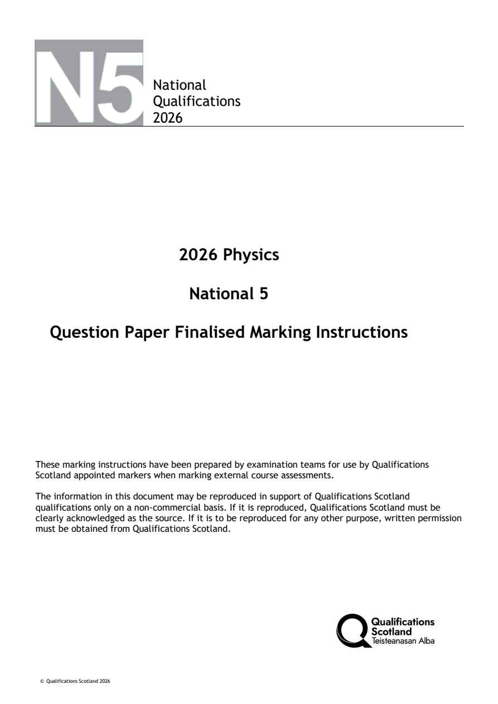
Selectable page text
National
Qualifications
2026
2026 Physics
National 5
Question Paper Finalised Marking Instructions
These marking instructions have been prepared by examination teams for use by Qualifications
Scotland appointed markers when marking external course assessments.
The information in this document may be reproduced in support of Qualifications Scotland
qualifications only on a non-commercial basis. If it is reproduced, Qualifications Scotland must be
clearly acknowledged as the source. If it is to be reproduced for any other purpose, written permission
must be obtained from Qualifications Scotland.
© Qualifications Scotland 2026PDF page 2
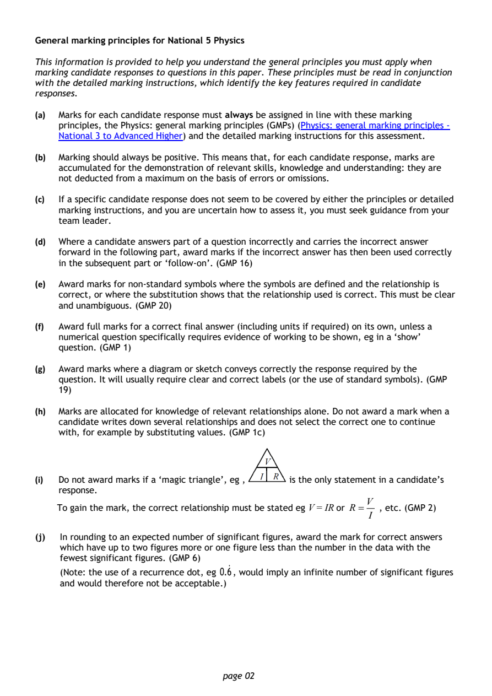
Selectable page text
General marking principles for National 5 Physics
This information is provided to help you understand the general principles you must apply when
marking candidate responses to questions in this paper. These principles must be read in conjunction
with the detailed marking instructions, which identify the key features required in candidate
responses.
(a) Marks for each candidate response must always be assigned in line with these marking
principles, the Physics: general marking principles (GMPs) (Physics: general marking principles -
National 3 to Advanced Higher) and the detailed marking instructions for this assessment.
(b) Marking should always be positive. This means that, for each candidate response, marks are
accumulated for the demonstration of relevant skills, knowledge and understanding: they are
not deducted from a maximum on the basis of errors or omissions.
(c) If a specific candidate response does not seem to be covered by either the principles or detailed
marking instructions, and you are uncertain how to assess it, you must seek guidance from your
team leader.
(d) Where a candidate answers part of a question incorrectly and carries the incorrect answer
forward in the following part, award marks if the incorrect answer has then been used correctly
in the subsequent part or ‘follow-on’. (GMP 16)
(e) Award marks for non-standard symbols where the symbols are defined and the relationship is
correct, or where the substitution shows that the relationship used is correct. This must be clear
and unambiguous. (GMP 20)
(f) Award full marks for a correct final answer (including units if required) on its own, unless a
numerical question specifically requires evidence of working to be shown, eg in a ‘show’
question. (GMP 1)
(g) Award marks where a diagram or sketch conveys correctly the response required by the
question. It will usually require clear and correct labels (or the use of standard symbols). (GMP
19)
(h) Marks are allocated for knowledge of relevant relationships alone. Do not award a mark when a
candidate writes down several relationships and does not select the correct one to continue
with, for example by substituting values. (GMP 1c)
(i) Do not award marks if a ‘magic triangle’, eg , is the only statement in a candidate’s
response.
V
To gain the mark, the correct relationship must be stated eg V = IR or R = , etc. (GMP 2)
I
(j) In rounding to an expected number of significant figures, award the mark for correct answers
which have up to two figures more or one figure less than the number in the data with the
fewest significant figures. (GMP 6)
(Note: the use of a recurrence dot, eg 0.6, would imply an infinite number of significant figures
and would therefore not be acceptable.)
page 02PDF page 3
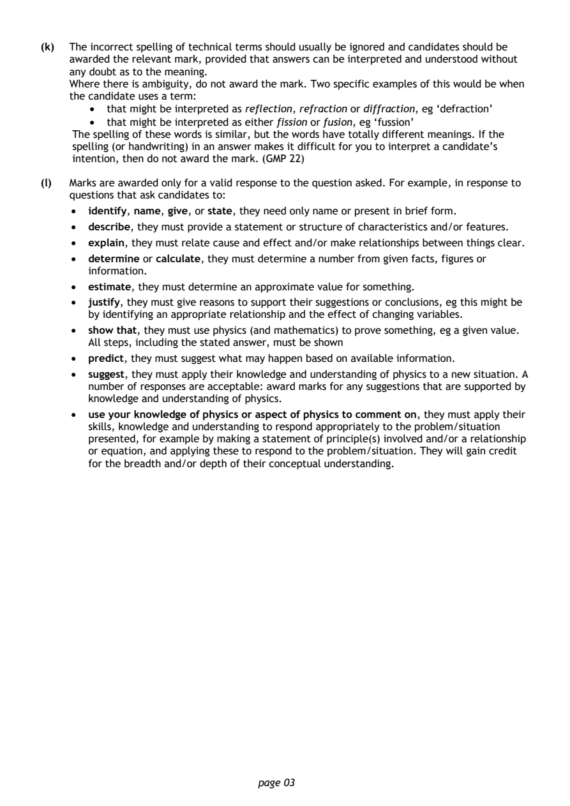
Selectable page text
(k) The incorrect spelling of technical terms should usually be ignored and candidates should be
awarded the relevant mark, provided that answers can be interpreted and understood without
any doubt as to the meaning.
Where there is ambiguity, do not award the mark. Two specific examples of this would be when
the candidate uses a term:
• that might be interpreted as reflection, refraction or diffraction, eg ‘defraction’
• that might be interpreted as either fission or fusion, eg ‘fussion’
The spelling of these words is similar, but the words have totally different meanings. If the
spelling (or handwriting) in an answer makes it difficult for you to interpret a candidate’s
intention, then do not award the mark. (GMP 22)
(l) Marks are awarded only for a valid response to the question asked. For example, in response to
questions that ask candidates to:
• identify, name, give, or state, they need only name or present in brief form.
• describe, they must provide a statement or structure of characteristics and/or features.
• explain, they must relate cause and effect and/or make relationships between things clear.
• determine or calculate, they must determine a number from given facts, figures or
information.
• estimate, they must determine an approximate value for something.
• justify, they must give reasons to support their suggestions or conclusions, eg this might be
by identifying an appropriate relationship and the effect of changing variables.
• show that, they must use physics (and mathematics) to prove something, eg a given value.
All steps, including the stated answer, must be shown
• predict, they must suggest what may happen based on available information.
• suggest, they must apply their knowledge and understanding of physics to a new situation. A
number of responses are acceptable: award marks for any suggestions that are supported by
knowledge and understanding of physics.
• use your knowledge of physics or aspect of physics to comment on, they must apply their
skills, knowledge and understanding to respond appropriately to the problem/situation
presented, for example by making a statement of principle(s) involved and/or a relationship
or equation, and applying these to respond to the problem/situation. They will gain credit
for the breadth and/or depth of their conceptual understanding.
page 03PDF page 4
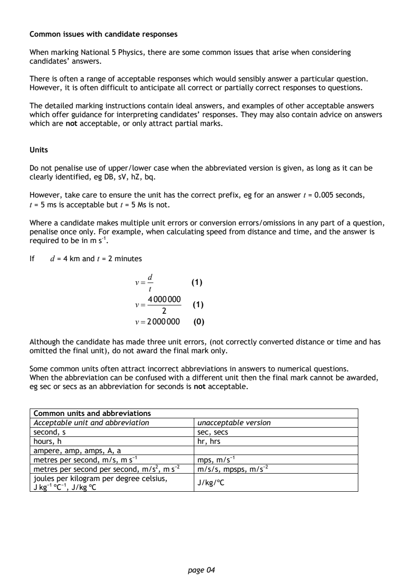
Selectable page text
Common issues with candidate responses
When marking National 5 Physics, there are some common issues that arise when considering
candidates’ answers.
There is often a range of acceptable responses which would sensibly answer a particular question.
However, it is often difficult to anticipate all correct or partially correct responses to questions.
The detailed marking instructions contain ideal answers, and examples of other acceptable answers
which offer guidance for interpreting candidates’ responses. They may also contain advice on answers
which are not acceptable, or only attract partial marks.
Units
Do not penalise use of upper/lower case when the abbreviated version is given, as long as it can be
clearly identified, eg DB, sV, hZ, bq.
However, take care to ensure the unit has the correct prefix, eg for an answer t = 0.005 seconds,
t = 5 ms is acceptable but t = 5 Ms is not.
Where a candidate makes multiple unit errors or conversion errors/omissions in any part of a question,
penalise once only. For example, when calculating speed from distance and time, and the answer is
required to be in ms⁻¹.
If d = 4 km and t = 2 minutes
d
v= (1)
t
4000000
v= (1)
2
v=2000000 (0)
Although the candidate has made three unit errors, (not correctly converted distance or time and has
omitted the final unit), do not award the final mark only.
Some common units often attract incorrect abbreviations in answers to numerical questions.
When the abbreviation can be confused with a different unit then the final mark cannot be awarded,
eg sec or secs as an abbreviation for seconds is not acceptable.
Common units and abbreviations
Acceptable unit and abbreviation unacceptable version
second, s sec, secs
hours, h hr, hrs
ampere, amp, amps, A, a
metres per second, m/s, m s⁻¹ mps, m/s⁻¹
metres per second per second, m/s², m s⁻² m/s/s, mpsps, m/s⁻²
joules per kilogram per degree celsius,
J/kg/ºC
J kg⁻¹ ºC⁻¹, J/kg ºC
page 04PDF page 5
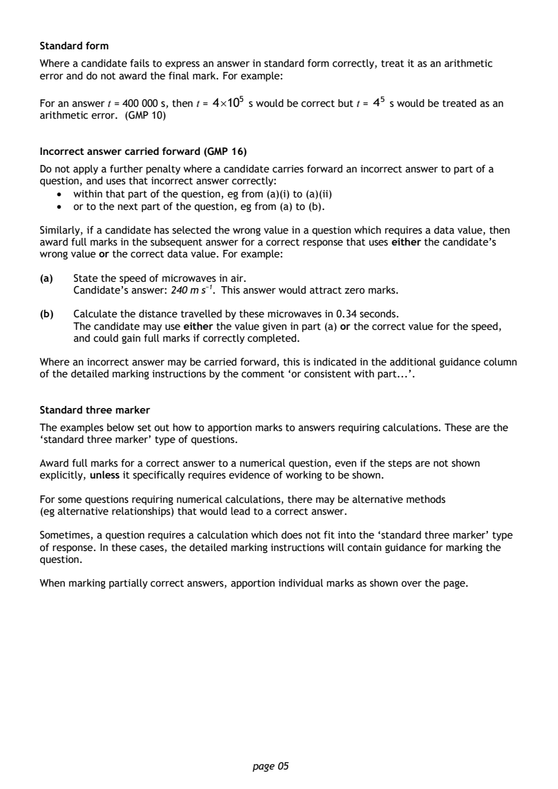
Selectable page text
Standard form
Where a candidate fails to express an answer in standard form correctly, treat it as an arithmetic
error and do not award the final mark. For example:
For an answer t = 400 000 s, then t = 4×10⁵ s would be correct but t = 4⁵ s would be treated as an
arithmetic error. (GMP 10)
Incorrect answer carried forward (GMP 16)
Do not apply a further penalty where a candidate carries forward an incorrect answer to part of a
question, and uses that incorrect answer correctly:
• within that part of the question, eg from (a)(i) to (a)(ii)
• or to the next part of the question, eg from (a) to (b).
Similarly, if a candidate has selected the wrong value in a question which requires a data value, then
award full marks in the subsequent answer for a correct response that uses either the candidate’s
wrong value or the correct data value. For example:
(a) State the speed of microwaves in air.
Candidate’s answer: 240 m s⁻¹. This answer would attract zero marks.
(b) Calculate the distance travelled by these microwaves in 0.34 seconds.
The candidate may use either the value given in part (a) or the correct value for the speed,
and could gain full marks if correctly completed.
Where an incorrect answer may be carried forward, this is indicated in the additional guidance column
of the detailed marking instructions by the comment ‘or consistent with part...’.
Standard three marker
The examples below set out how to apportion marks to answers requiring calculations. These are the
‘standard three marker’ type of questions.
Award full marks for a correct answer to a numerical question, even if the steps are not shown
explicitly, unless it specifically requires evidence of working to be shown.
For some questions requiring numerical calculations, there may be alternative methods
(eg alternative relationships) that would lead to a correct answer.
Sometimes, a question requires a calculation which does not fit into the ‘standard three marker’ type
of response. In these cases, the detailed marking instructions will contain guidance for marking the
question.
When marking partially correct answers, apportion individual marks as shown over the page.
page 05PDF page 6
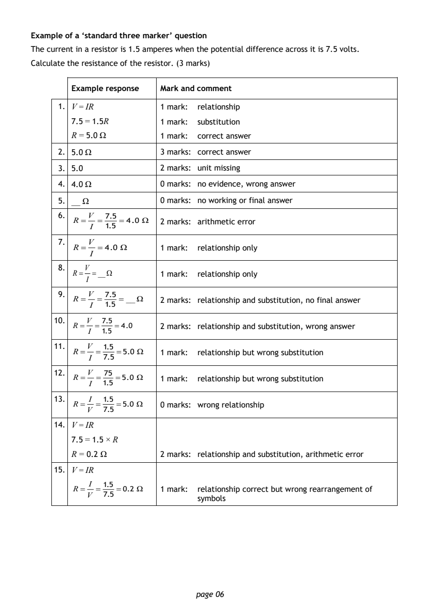
Selectable page text
Example of a ‘standard three marker’ question
The current in a resistor is 1.5 amperes when the potential difference across it is 7.5 volts.
Calculate the resistance of the resistor. (3 marks)
Example response Mark and comment
1. V = IR 1 mark: relationship
7.5 = 1.5R 1 mark: substitution
R = 5.0 Ω 1 mark: correct answer
2. 5.0 Ω 3 marks: correct answer
3. 5.0 2 marks: unit missing
4. 4.0 Ω 0 marks: no evidence, wrong answer
5. __ Ω 0 marks: no working or final answer
6. V 7.5
R = = =4.0 Ω 2 marks: arithmetic error
I 1.5
7. V
R= =4.0 Ω 1 mark: relationship only
I
8. V
R= =__Ω 1 mark: relationship only
I
9. V 7.5
R = = = __Ω 2 marks: relationship and substitution, no final answer
I 1.5
10. V 7.5
R= = =4.0 2 marks: relationship and substitution, wrong answer
I 1.5
11. V 1.5
R= = =5.0 Ω 1 mark: relationship but wrong substitution
I 7.5
12. V 75
R= = =5.0 Ω 1 mark: relationship but wrong substitution
I 1.5
13. I 1.5
R= = =5.0 Ω 0 marks: wrong relationship
V 7.5
14. V = IR
7.5 = 1.5 × R
R = 0.2 Ω 2 marks: relationship and substitution, arithmetic error
15. V = IR
I 1.5
R= = =0.2 Ω 1 mark: relationship correct but wrong rearrangement of
V 7.5
symbols
page 06PDF page 7
Section 1, Question 1Section 1, Question 2Section 1, Question 3Section 1, Question 4Section 1, Question 5Section 1, Question 6Section 1, Question 7Section 1, Question 8Section 1, Question 9Section 1, Question 10Section 1, Question 11Section 1, Question 12Section 1, Question 13Section 1, Question 14Section 1, Question 15Section 1, Question 16Section 1, Question 17Section 1, Question 18Section 1, Question 19Section 1, Question 20Section 1, Question 21Section 1, Question 22Section 1, Question 23Section 1, Question 24Section 1, Question 25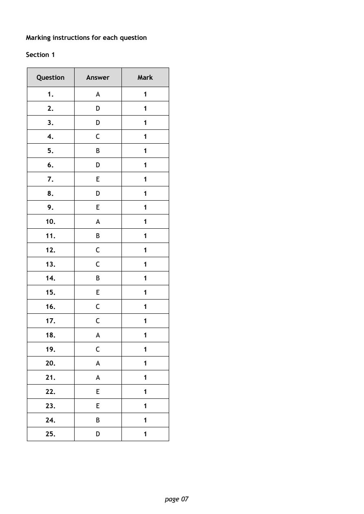
Selectable page text
Marking instructions for each question
Section 1
Question Answer Mark
1. A 1
2. D 1
3. D 1
4. C 1
5. B 1
6. D 1
7. E 1
8. D 1
9. E 1
10. A 1
11. B 1
12. C 1
13. C 1
14. B 1
15. E 1
16. C 1
17. C 1
18. A 1
19. C 1
20. A 1
21. A 1
22. E 1
23. E 1
24. B 1
25. D 1
page 07PDF page 8
Section 2, Question 1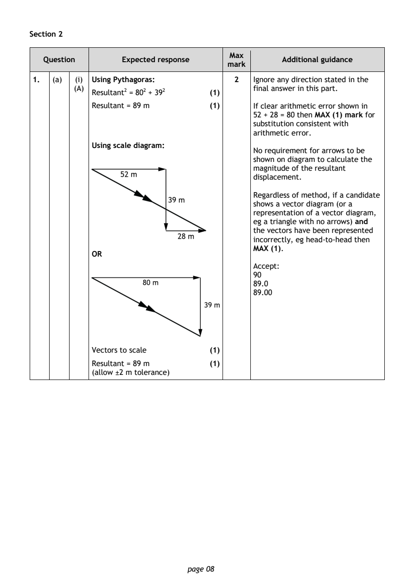
Selectable page text
Section 2
Max
Question Expected response Additional guidance
mark
1. (a) (i) Using Pythagoras: 2 Ignore any direction stated in the
(A) final answer in this part.
Resultant² = 80² + 39² (1)
Resultant = 89 m (1) If clear arithmetic error shown in
52 + 28 = 80 then MAX (1) mark for
substitution consistent with
arithmetic error.
Using scale diagram:
No requirement for arrows to be
shown on diagram to calculate the
magnitude of the resultant
displacement.
Regardless of method, if a candidate
shows a vector diagram (or a
representation of a vector diagram,
eg a triangle with no arrows) and
the vectors have been represented
incorrectly, eg head-to-head then
MAX (1).
OR
Accept:
90
89.0
89.00
Vectors to scale (1)
Resultant = 89 m (1)
(allow ±2 m tolerance)
page 08PDF page 9
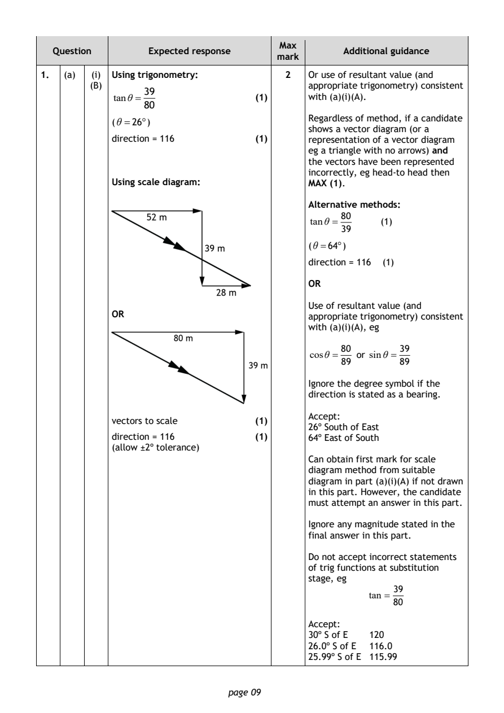
Selectable page text
Max
Question Expected response Additional guidance
mark
1. (a) (i) Using trigonometry: 2 Or use of resultant value (and
(B) appropriate trigonometry) consistent
39
tanθ = (1) with (a)(i)(A).
80
Regardless of method, if a candidate
(θ =26°)
shows a vector diagram (or a
direction = 116 (1) representation of a vector diagram
eg a triangle with no arrows) and
the vectors have been represented
incorrectly, eg head-to head then
Using scale diagram: MAX (1).
Alternative methods:
80
tanθ = (1)
39
(θ =64°)
direction = 116 (1)
OR
Use of resultant value (and
OR appropriate trigonometry) consistent
with (a)(i)(A), eg
80 39
cosθ = or sinθ =
89 89
Ignore the degree symbol if the
direction is stated as a bearing.
Accept:
vectors to scale (1)
26º South of East
direction = 116 (1) 64º East of South
(allow ±2º tolerance)
Can obtain first mark for scale
diagram method from suitable
diagram in part (a)(i)(A) if not drawn
in this part. However, the candidate
must attempt an answer in this part.
Ignore any magnitude stated in the
final answer in this part.
Do not accept incorrect statements
of trig functions at substitution
stage, eg
39
tan =
80
Accept:
30º S of E 120
26.0º S of E 116.0
25.99º S of E 115.99
page 09PDF page 10
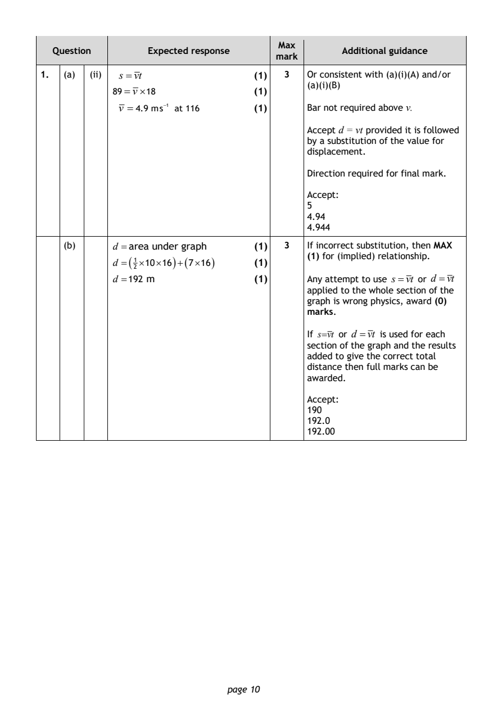
Selectable page text
Max
Question Expected response Additional guidance
mark
1. (a) (ii) s =vt (1) 3 Or consistent with (a)(i)(A) and/or
(a)(i)(B)
89=v×18 (1)
v =4.9 ms⁻¹ at 116 (1) Bar not required above v.
Accept d = vt provided it is followed
by a substitution of the value for
displacement.
Direction required for final mark.
Accept:
5
4.94
4.944
(b) d =area under graph (1) 3 If incorrect substitution, then MAX
(1) for (implied) relationship.
d =(₂1×10×16 )+(7×16) (1)
d =192 m (1) Any attempt to use s=vt or d =vt
applied to the whole section of the
graph is wrong physics, award (0)
marks.
If s=vt or d =vt is used for each
section of the graph and the results
added to give the correct total
distance then full marks can be
awarded.
Accept:
190
192.0
192.00
page 10PDF page 11
Section 2, Question 2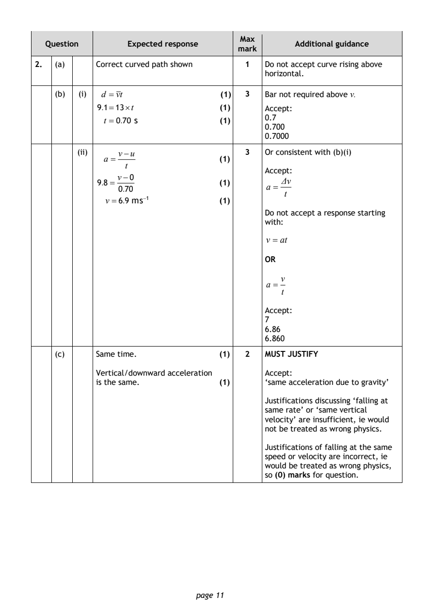
Selectable page text
Max
Question Expected response Additional guidance
mark
2. (a) Correct curved path shown 1 Do not accept curve rising above
horizontal.
(b) (i) d =vt (1) 3 Bar not required above v.
9.1=13×t (1) Accept:
0.7
t =0.70 s (1)
0.700
0.7000
(ii) v−u 3 Or consistent with (b)(i)
a = (1)
t
Accept:
v−0
9.8 = (1) Δv
0.70
a =
t
v =6.9 ms⁻¹ (1)
Do not accept a response starting
with:
v = at
OR
v
a =
t
Accept:
7
6.86
6.860
(c) Same time. (1) 2 MUST JUSTIFY
Vertical/downward acceleration Accept:
is the same. (1) ‘same acceleration due to gravity’
Justifications discussing ‘falling at
same rate’ or ‘same vertical
velocity’ are insufficient, ie would
not be treated as wrong physics.
Justifications of falling at the same
speed or velocity are incorrect, ie
would be treated as wrong physics,
so (0) marks for question.
page 11PDF page 12
Section 2, Question 3Selectable page text
Max
Question Expected response Additional guidance
mark
3. Award 3 marks where the candidate 3 Candidates may use a variety of
has demonstrated a good physics arguments to answer this
understanding of the physics question.
involved. They show a good
comprehension of the physics of the Award marks based on candidates
situation and provide a logically demonstrating overall good,
correct answer to the question reasonable, limited, or no
posed. This type of response might understanding.
include a statement of the principles
involved, a relationship or an
equation, and the application of
these to respond to the problem.
The answer does not need to be
‘excellent’ or ‘complete’ for the
candidate to gain full marks.
Award 2 marks where the candidate
has demonstrated a reasonable
understanding of the physics
involved. They make some
statement(s) that are relevant to the
situation, showing that they have
understood the problem.
Award 1 mark where the candidate
has demonstrated a limited
understanding of the physics
involved. They make some
statement(s) that are relevant to the
situation, showing that they have
understood at least a little of the
physics within the problem.
Award 0 marks where the candidate
has not demonstrated an
understanding of the physics
involved. There is no evidence that
they have recognised the area of
physics involved, or they have not
given any statement of a relevant
physics principle. Award this mark
also if the candidate merely restates
the physics given in the question.
page 12PDF page 13
Section 2, Question 4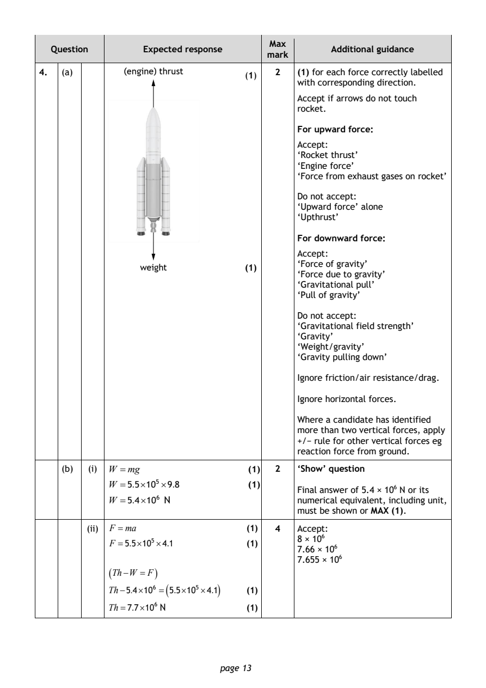
Selectable page text
Max
Question Expected response Additional guidance
mark
4. (a) 2 (1) for each force correctly labelled
(1)
with corresponding direction.
Accept if arrows do not touch
rocket.
For upward force:
Accept:
‘Rocket thrust’
‘Engine force’
‘Force from exhaust gases on rocket’
Do not accept:
‘Upward force’ alone
‘Upthrust’
For downward force:
Accept:
‘Force of gravity’
(1)
‘Force due to gravity’
‘Gravitational pull’
‘Pull of gravity’
Do not accept:
‘Gravitational field strength’
‘Gravity’
‘Weight/gravity’
‘Gravity pulling down’
Ignore friction/air resistance/drag.
Ignore horizontal forces.
Where a candidate has identified
more than two vertical forces, apply
+/− rule for other vertical forces eg
reaction force from ground.
(b) (i) W =mg (1) 2 ‘Show’ question
W =5.5×10⁵×9.8 (1)
Final answer of 5.4 × 10⁶ N or its
W =5.4×10⁶ N numerical equivalent, including unit,
must be shown or MAX (1).
(ii) F =ma (1) 4 Accept:
8 × 10⁶
F =5.5×10⁵×4.1 (1)
7.66 × 10⁶
7.655 × 10⁶
(Th−W =F)
( )
Th−5.4×10⁶ = 5.5×10⁵×4.1 (1)
Th=7.7×10⁶ N (1)
page 13PDF page 14
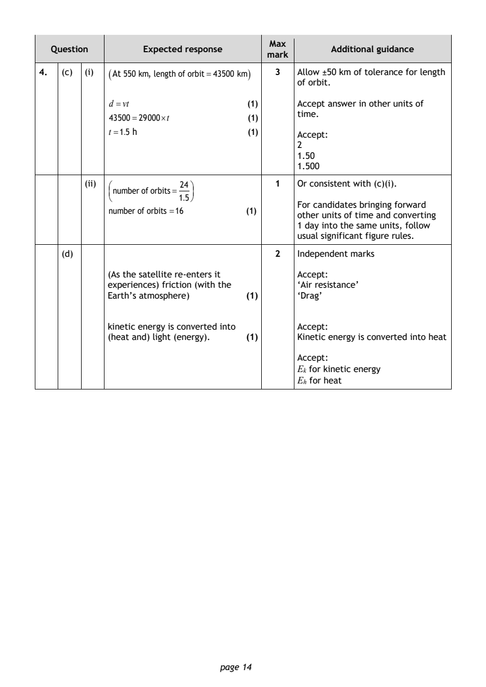
Selectable page text
Max
Question Expected response Additional guidance
mark
4. (c) (i) (At 550 km, length of orbit=43500 km) 3 Allow ±50 km of tolerance for length
of orbit.
d =vt (1) Accept answer in other units of
time.
43500=29000×t (1)
t=1.5 h (1)
Accept:
2
1.50
1.500
(ii) 24 1 Or consistent with (c)(i).
number of orbits=
1.5
For candidates bringing forward
number of orbits =16 (1)
other units of time and converting
1 day into the same units, follow
usual significant figure rules.
(d) 2 Independent marks
(As the satellite re-enters it Accept:
experiences) friction (with the ‘Air resistance’
Earth’s atmosphere) (1) ‘Drag’
kinetic energy is converted into Accept:
(heat and) light (energy). (1) Kinetic energy is converted into heat
Accept:
E for kinetic energy
E^{k} for heat
h
page 14PDF page 15
Section 2, Question 5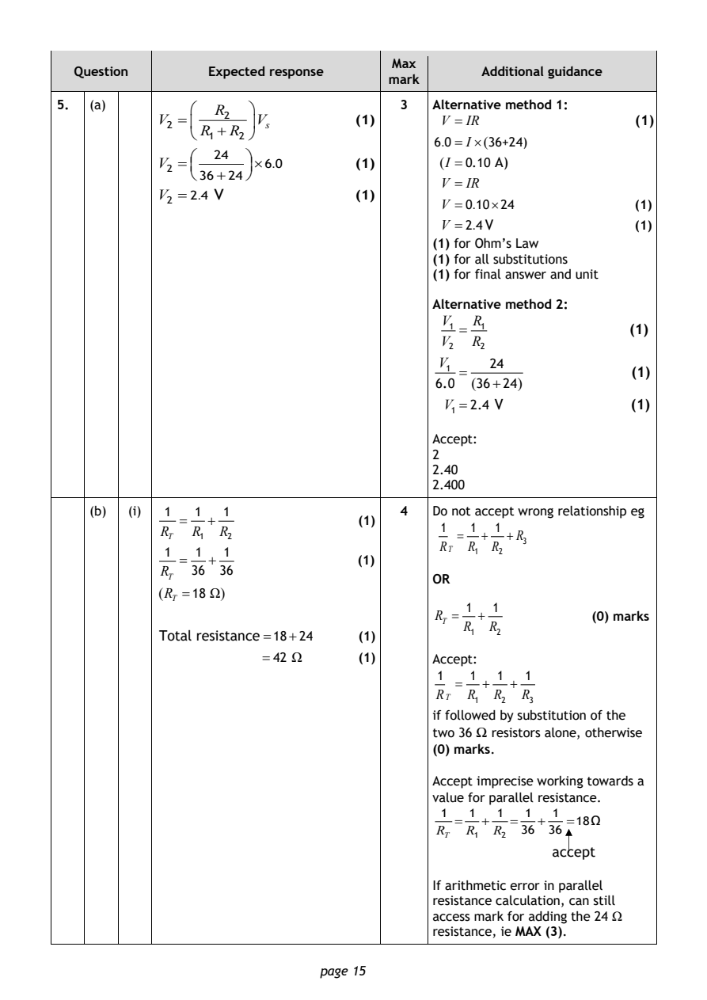
Selectable page text
Max
Question Expected response Additional guidance
mark
5. (a) R₂ 3 Alternative method 1:
V₂ = Vₛ (1) V = IR (1)
R₁+R₂
6.0= I×(36+24)
24
V₂ = ×6.0 (1) (I =0.10 A)
36+24
V = IR
V₂ =2.4 V (1)
V =0.10×24 (1)
V =2.4V (1)
(1) for Ohm’s Law
(1) for all substitutions
(1) for final answer and unit
Alternative method 2:
V₁ R₁
= (1)
V₂ R₂
V₁ 24
= (1)
6.0 (36+24)
V₁=2.4 V (1)
Accept:
2
2.40
2.400
(b) (i) 1 1 1 4 Do not accept wrong relationship eg
= + (1)
R_{T} R₁ R₂ 1 1 1
= + +R₃
R R₁ R₂
1 1 1 T
= + (1)
R_{T} 36 36
OR
(R_{T} =18 Ω)
1 1
R_{T} = + (0) marks
R₁ R₂
Total resistance=18+24 (1)
=42 Ω (1) Accept:
1 1 1 1
= + +
R R₁ R₂ R₃
T
if followed by substitution of the
two 36 Ω resistors alone, otherwise
(0) marks.
Accept imprecise working towards a
value for parallel resistance.
1 1 1 1 1
= + = + =18Ω
R_{T} R₁ R₂ 36 36
accept
If arithmetic error in parallel
resistance calculation, can still
access mark for adding the 24 Ω
resistance, ie MAX (3).
page 15PDF page 16
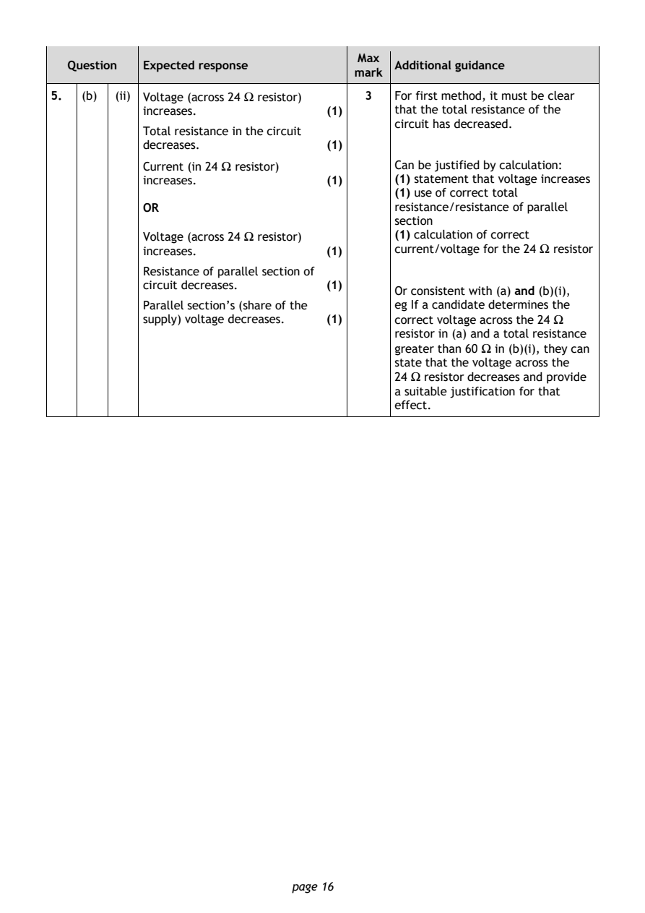
Selectable page text
Max
Question Expected response Additional guidance
mark
5. (b) (ii) Voltage (across 24 Ω resistor) 3 For first method, it must be clear
increases. (1) that the total resistance of the
circuit has decreased.
Total resistance in the circuit
decreases. (1)
Current (in 24 Ω resistor) Can be justified by calculation:
increases. (1) (1) statement that voltage increases
(1) use of correct total
OR resistance/resistance of parallel
section
Voltage (across 24 Ω resistor) (1) calculation of correct
increases. (1) current/voltage for the 24 Ω resistor
Resistance of parallel section of
circuit decreases. (1)
Or consistent with (a) and (b)(i),
Parallel section’s (share of the eg If a candidate determines the
supply) voltage decreases. (1) correct voltage across the 24 Ω
resistor in (a) and a total resistance
greater than 60 Ω in (b)(i), they can
state that the voltage across the
24 Ω resistor decreases and provide
a suitable justification for that
effect.
page 16PDF page 17
Section 2, Question 6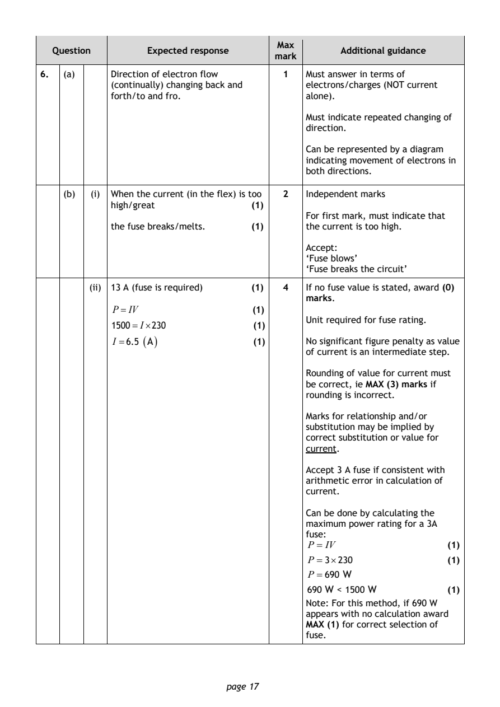
Selectable page text
Max
Question Expected response Additional guidance
mark
6. (a) Direction of electron flow 1 Must answer in terms of
(continually) changing back and electrons/charges (NOT current
forth/to and fro. alone).
Must indicate repeated changing of
direction.
Can be represented by a diagram
indicating movement of electrons in
both directions.
(b) (i) When the current (in the flex) is too 2 Independent marks
high/great (1)
For first mark, must indicate that
the fuse breaks/melts. (1) the current is too high.
Accept:
‘Fuse blows’
‘Fuse breaks the circuit’
(ii) 13 A (fuse is required) (1) 4 If no fuse value is stated, award (0)
marks.
P=IV (1)
Unit required for fuse rating.
1500=I×230 (1)
I =6.5 (A) (1) No significant figure penalty as value
of current is an intermediate step.
Rounding of value for current must
be correct, ie MAX (3) marks if
rounding is incorrect.
Marks for relationship and/or
substitution may be implied by
correct substitution or value for
current.
Accept 3 A fuse if consistent with
arithmetic error in calculation of
current.
Can be done by calculating the
maximum power rating for a 3A
fuse:
P = IV (1)
P =3×230 (1)
P =690 W
690 W < 1500 W (1)
Note: For this method, if 690 W
appears with no calculation award
MAX (1) for correct selection of
fuse.
page 17PDF page 18
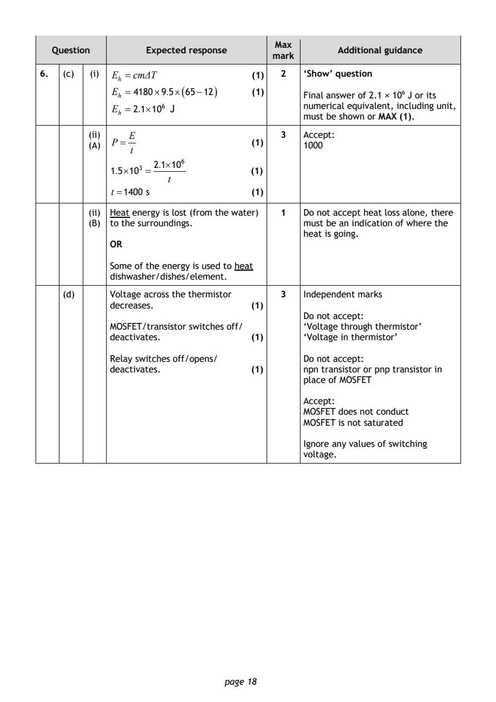
Selectable page text
Max
Question Expected response Additional guidance
mark
6. (c) (i) Eₕ =cmΔT (1) 2 ‘Show’ question
Eₕ = 4180×9.5×(65−12) (1)
Final answer of 2.1 × 10⁶ J or its
numerical equivalent, including unit,
Eₕ = 2.1×10⁶ J
must be shown or MAX (1).
(ii) E 3 Accept:
P= (1)
(A) 1000
t
2.1×10⁶
1.5×10³ = (1)
t
t =1400 s (1)
(ii) Heat energy is lost (from the water) 1 Do not accept heat loss alone, there
(B) to the surroundings. must be an indication of where the
heat is going.
OR
Some of the energy is used to heat
dishwasher/dishes/element.
(d) Voltage across the thermistor 3 Independent marks
decreases. (1)
Do not accept:
MOSFET/transistor switches off/ ‘Voltage through thermistor’
deactivates. (1) ‘Voltage in thermistor’
Relay switches off/opens/ Do not accept:
deactivates. (1) npn transistor or pnp transistor in
place of MOSFET
Accept:
MOSFET does not conduct
MOSFET is not saturated
Ignore any values of switching
voltage.
page 18PDF page 19
Section 2, Question 7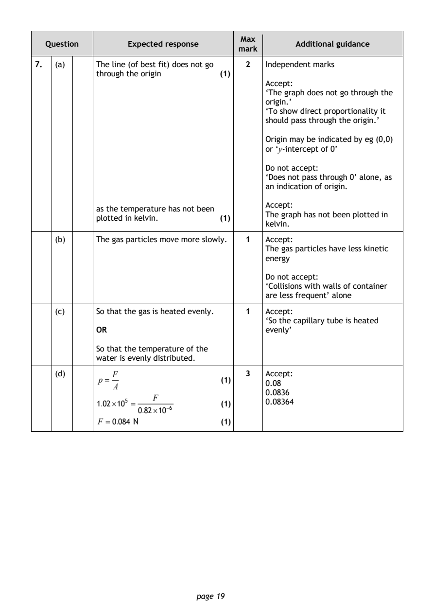
Selectable page text
Max
Question Expected response Additional guidance
mark
7. (a) The line (of best fit) does not go 2 Independent marks
through the origin (1)
Accept:
‘The graph does not go through the
origin.’
‘To show direct proportionality it
should pass through the origin.’
Origin may be indicated by eg (0,0)
or ‘y-intercept of 0’
Do not accept:
‘Does not pass through 0’ alone, as
an indication of origin.
Accept:
as the temperature has not been
The graph has not been plotted in
plotted in kelvin. (1)
kelvin.
(b) The gas particles move more slowly. 1 Accept:
The gas particles have less kinetic
energy
Do not accept:
‘Collisions with walls of container
are less frequent’ alone
(c) So that the gas is heated evenly. 1 Accept:
‘So the capillary tube is heated
OR evenly’
So that the temperature of the
water is evenly distributed.
(d) F 3 Accept:
p = (1)
0.08
A
0.0836
F
1.02×10⁵ = (1) 0.08364
0.82×10⁻⁶
F =0.084 N (1)
page 19PDF page 20
Section 2, Question 8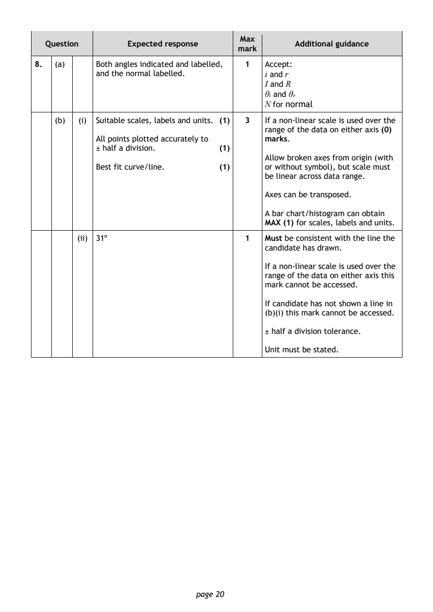
Selectable page text
Max
Question Expected response Additional guidance
mark
8. (a) Both angles indicated and labelled, 1 Accept:
and the normal labelled. i and r
I and R
θ and θᵣ
i
N for normal
(b) (i) Suitable scales, labels and units. (1) 3 If a non-linear scale is used over the
range of the data on either axis (0)
All points plotted accurately to marks.
± half a division. (1)
Allow broken axes from origin (with
Best fit curve/line. (1) or without symbol), but scale must
be linear across data range.
Axes can be transposed.
A bar chart/histogram can obtain
MAX (1) for scales, labels and units.
(ii) 31º 1 Must be consistent with the line the
candidate has drawn.
If a non-linear scale is used over the
range of the data on either axis this
mark cannot be accessed.
If candidate has not shown a line in
(b)(i) this mark cannot be accessed.
± half a division tolerance.
Unit must be stated.
page 20PDF page 21
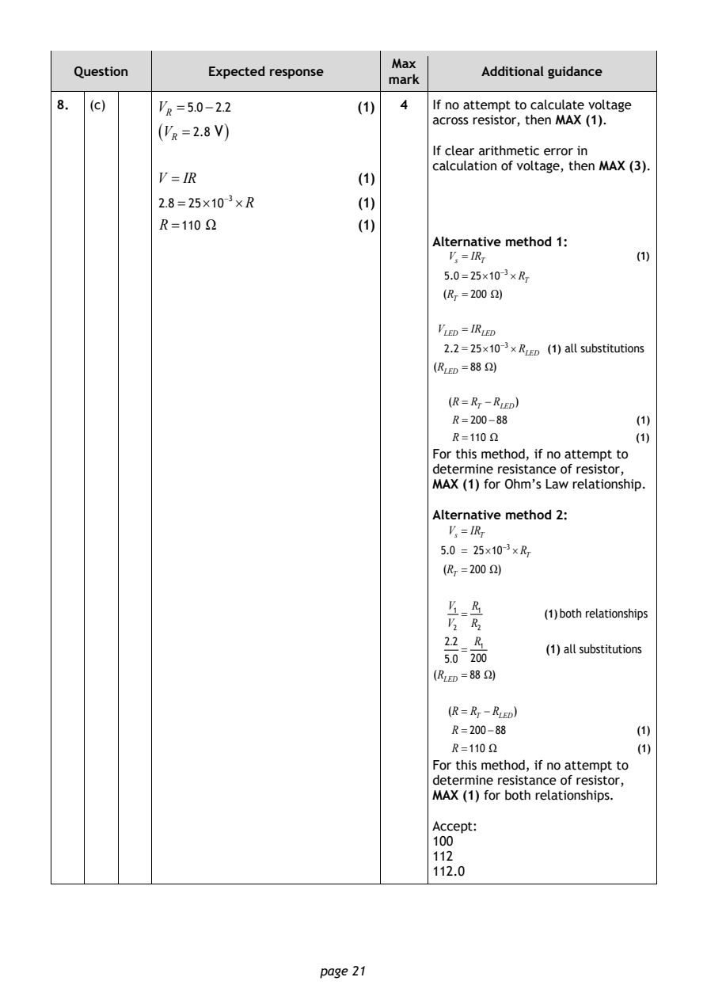
Selectable page text
Max
Question Expected response Additional guidance
mark
8. (c) V_{R} =5.0−2.2 (1) 4 If no attempt to calculate voltage
across resistor, then MAX (1).
(V_{R} =2.8 V)
If clear arithmetic error in
calculation of voltage, then MAX (3).
V = IR (1)
2.8=25×10⁻³×R (1)
R=110 Ω (1)
Alternative method 1:
Vₛ =IR_{T} (1)
5.0=25×10⁻³×R_{T}
(R_{T} =200 Ω)
V_{L}_{E}_{D} =IR_{L}_{E}_{D}
2.2=25×10⁻³×R_{L}_{E}_{D} (1) all substitutions
(R_{L}_{E}_{D} =88 Ω)
(R=R_{T} −R_{L}_{E}_{D})
R=200−88 (1)
R=110 Ω (1)
For this method, if no attempt to
determine resistance of resistor,
MAX (1) for Ohm’s Law relationship.
Alternative method 2:
Vₛ =IR_{T}
5.0 = 25×10⁻³×R_{T}
(R_{T} =200 Ω)
V₁ R₁
= (1) both relationships
V₂ R₂
2.2 R₁
= (1) all substitutions
5.0 200
(R_{L}_{E}_{D} =88 Ω)
(R=R_{T} −R_{L}_{E}_{D})
R=200−88 (1)
R=110 Ω (1)
For this method, if no attempt to
determine resistance of resistor,
MAX (1) for both relationships.
Accept:
100
112
112.0
page 21PDF page 22
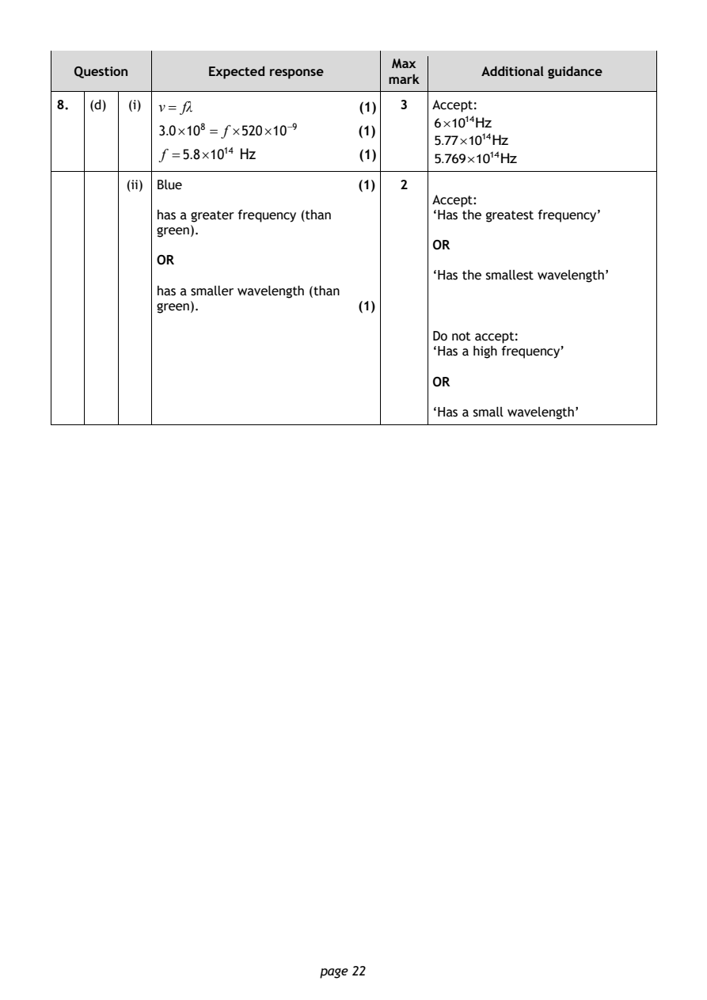
Selectable page text
Max
Question Expected response Additional guidance
mark
8. (d) (i) v= fλ (1) 3 Accept:
6×10¹⁴Hz
3.0×10⁸ = f ×520×10⁻⁹ (1)
5.77×10¹⁴Hz
f =5.8×10¹⁴ Hz (1)
5.769×10¹⁴Hz
(ii) Blue (1) 2
Accept:
has a greater frequency (than ‘Has the greatest frequency’
green).
OR
OR
‘Has the smallest wavelength’
has a smaller wavelength (than
green). (1)
Do not accept:
‘Has a high frequency’
OR
‘Has a small wavelength’
page 22PDF page 23
Section 2, Question 9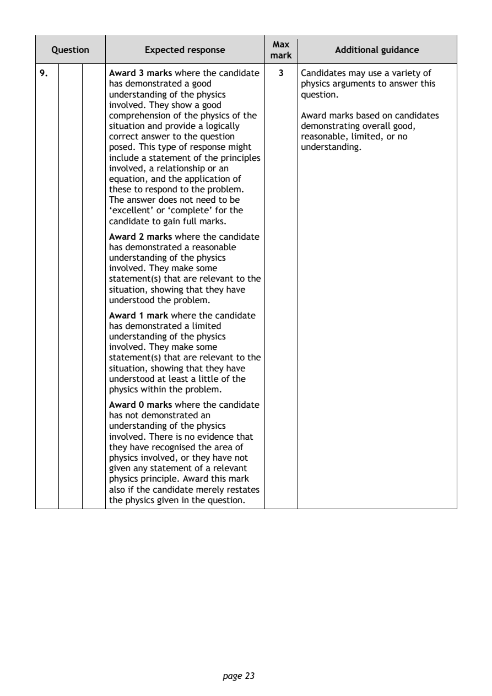
Selectable page text
Max
Question Expected response Additional guidance
mark
9. Award 3 marks where the candidate 3 Candidates may use a variety of
has demonstrated a good physics arguments to answer this
understanding of the physics question.
involved. They show a good
comprehension of the physics of the Award marks based on candidates
situation and provide a logically demonstrating overall good,
correct answer to the question reasonable, limited, or no
posed. This type of response might understanding.
include a statement of the principles
involved, a relationship or an
equation, and the application of
these to respond to the problem.
The answer does not need to be
‘excellent’ or ‘complete’ for the
candidate to gain full marks.
Award 2 marks where the candidate
has demonstrated a reasonable
understanding of the physics
involved. They make some
statement(s) that are relevant to the
situation, showing that they have
understood the problem.
Award 1 mark where the candidate
has demonstrated a limited
understanding of the physics
involved. They make some
statement(s) that are relevant to the
situation, showing that they have
understood at least a little of the
physics within the problem.
Award 0 marks where the candidate
has not demonstrated an
understanding of the physics
involved. There is no evidence that
they have recognised the area of
physics involved, or they have not
given any statement of a relevant
physics principle. Award this mark
also if the candidate merely restates
the physics given in the question.
page 23PDF page 24
Section 2, Question 10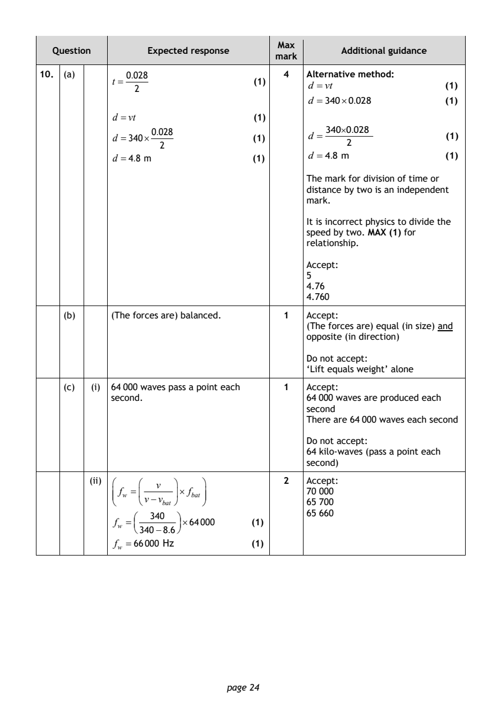
Selectable page text
Max
Question Expected response Additional guidance
mark
10. (a) 0.028 4 Alternative method:
t = (1)
d =vt (1)
2
d =340×0.028 (1)
d =vt (1)
0.028 340×0.028
d =340× (1) d = (1)
2 2
d =4.8 m (1) d =4.8 m (1)
The mark for division of time or
distance by two is an independent
mark.
It is incorrect physics to divide the
speed by two. MAX (1) for
relationship.
Accept:
5
4.76
4.760
(b) (The forces are) balanced. 1 Accept:
(The forces are) equal (in size) and
opposite (in direction)
Do not accept:
‘Lift equals weight’ alone
(c) (i) 64 000 waves pass a point each 1 Accept:
second. 64 000 waves are produced each
second
There are 64 000 waves each second
Do not accept:
64 kilo-waves (pass a point each
second)
(ii) v 2 Accept:
f_{w} = × f_{b}ₐₜ 70 000
v−v_{b}ₐₜ
65 700
65 660
340
f_{w} = ×64000 (1)
340−8.6
f_{w} =66000 Hz (1)
page 24PDF page 25
Section 2, Question 11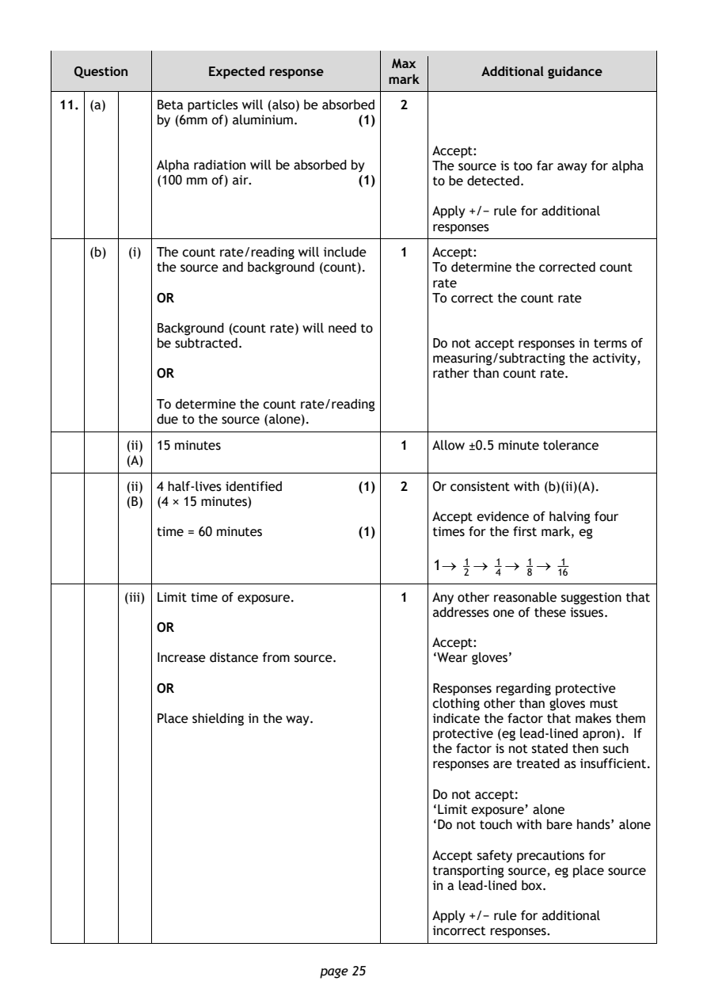
Selectable page text
Max
Question Expected response Additional guidance
mark
11. (a) Beta particles will (also) be absorbed 2
by (6mm of) aluminium. (1)
Accept:
Alpha radiation will be absorbed by The source is too far away for alpha
(100 mm of) air. (1) to be detected.
Apply +/− rule for additional
responses
(b) (i) The count rate/reading will include 1 Accept:
the source and background (count). To determine the corrected count
rate
OR To correct the count rate
Background (count rate) will need to
be subtracted. Do not accept responses in terms of
measuring/subtracting the activity,
OR rather than count rate.
To determine the count rate/reading
due to the source (alone).
(ii) 15 minutes 1 Allow ±0.5 minute tolerance
(A)
(ii) 4 half-lives identified (1) 2 Or consistent with (b)(ii)(A).
(B) (4 × 15 minutes)
Accept evidence of halving four
time = 60 minutes (1) times for the first mark, eg
1→ ₂¹ → 1 → 1 → 1
4 8 16
(iii) Limit time of exposure. 1 Any other reasonable suggestion that
addresses one of these issues.
OR
Accept:
Increase distance from source. ‘Wear gloves’
OR Responses regarding protective
clothing other than gloves must
Place shielding in the way. indicate the factor that makes them
protective (eg lead-lined apron). If
the factor is not stated then such
responses are treated as insufficient.
Do not accept:
‘Limit exposure’ alone
‘Do not touch with bare hands’ alone
Accept safety precautions for
transporting source, eg place source
in a lead-lined box.
Apply +/− rule for additional
incorrect responses.
page 25PDF page 26
Section 2, Question 12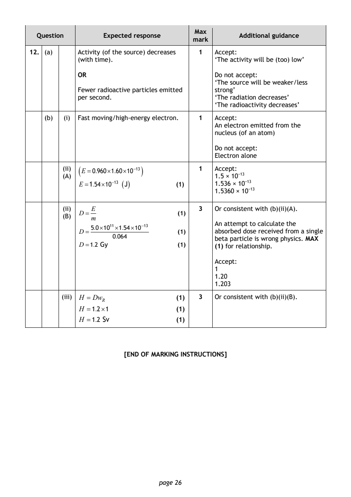
Selectable page text
Max
Question Expected response Additional guidance
mark
12. (a) Activity (of the source) decreases 1 Accept:
(with time). ‘The activity will be (too) low’
OR Do not accept:
‘The source will be weaker/less
Fewer radioactive particles emitted strong’
per second. ‘The radiation decreases’
‘The radioactivity decreases’
(b) (i) Fast moving/high-energy electron. 1 Accept:
An electron emitted from the
nucleus (of an atom)
Do not accept:
Electron alone
(ii) ( ) 1 Accept:
E=0.960×1.60×10⁻¹³
(A) 1.5 × 10⁻¹³
E=1.54×10⁻¹³ (J) (1) 1.536 × 10⁻¹³
1.5360 × 10⁻¹³
(ii) E 3 Or consistent with (b)(ii)(A).
D= (1)
(B)
m
An attempt to calculate the
5.0×10¹¹×1.54×10⁻¹³
D= (1) absorbed dose received from a single
0.064
beta particle is wrong physics. MAX
D=1.2 Gy (1) (1) for relationship.
Accept:
1
1.20
1.203
(iii) H = Dw_{R} (1) 3 Or consistent with (b)(ii)(B).
H =1.2×1 (1)
H =1.2 Sv (1)
[END OF MARKING INSTRUCTIONS]
page 26